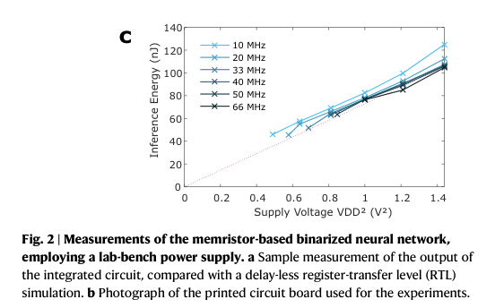
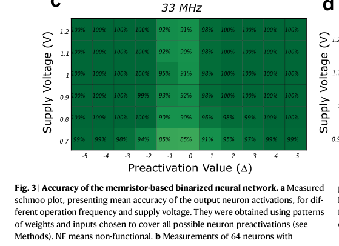
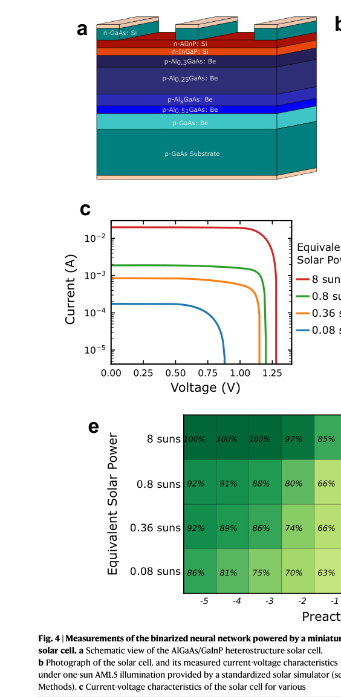
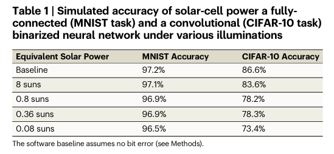
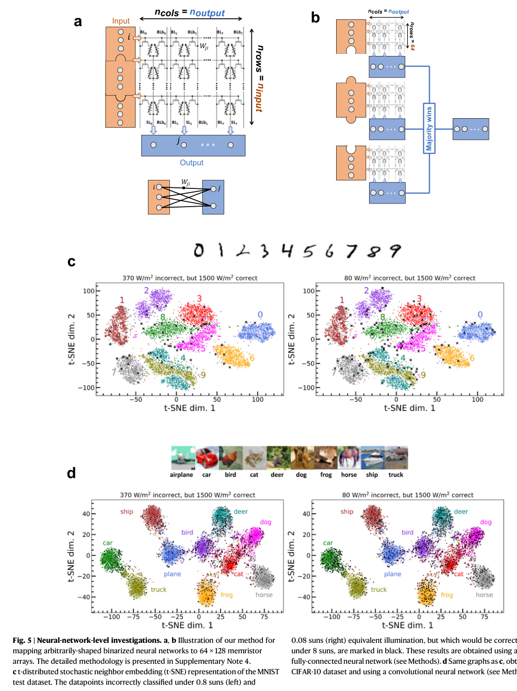

本报告由大模型自动生成，可能存在理解、归纳或数据转述错误；请以原论文为准。 Powering AI at the edge: A robust, memristor-based binarized neural network with near-memory computing and miniaturized solar cellFadi Jebali, Atreya Majumdar, Clément Turck, Kamel-Eddine Harabi, Mathieu-Coumba Faye, Eloi Muhr, Jean-Pierre Walder, Oleksandr V. Bilousov, Amadéo Michaud, Elisa Vianello, Tifenn Hirtzlin, F. Andrieu, M. Bocquet, Stéphane Collin, Damien Querlioz, Jean‐Michel Portal · Nature Communications · 2024 · 原文 · PDF 图表提取提示：报告提到的 Figure 1 未能自动裁出；请查看原论文 PDF。 报告模型：gemini-3.1-pro-preview / high 以下是对《Powering AI at the edge: A robust, memristor-based binarized neural network with near-memory computing and miniaturized solar cell》（为边缘AI供电：一种基于忆阻器、具备近内存计算和微型太阳能电池的稳健二值神经网络）一文的详细解析。 系统全貌与背景补充在深入论文细节之前，我们需要先建立理解本文所需的背景与系统全貌。 背景补充：物联网与边缘计算（Edge AI）要求将人工智能算法直接部署在传感器等终端设备上，以保护隐私并降低通信能耗。然而，AI 尤其是神经网络的“乘加运算（MAC）”非常耗电。为了实现无电池的“自供电（Self-powered）”系统，研究人员通常利用环境能量收集器（如微型太阳能电池）。但由于光照或环境变化，这些收集器输出的电压和功率极不稳定。 同时，**忆阻器（Memristor）**作为一种新兴的非易失性存储器件（断电后仍能保持内部电阻状态），被广泛用于存内计算（In-Memory Computing, CIM）。传统的模拟存内计算利用物理定律（如欧姆定律和基尔霍夫电流定律）直接在存储阵列中通过电流叠加完成计算，能效极高，但它对供电电压的稳定性和精度要求极其苛刻。这就产生了一个核心矛盾：高能效的模拟忆阻器系统无法直接利用不稳定的收集器电能。 系统层级与数据流：为了解决这一矛盾，本文设计并制造了一个能够容忍极低和不稳定电压的集成电路系统。系统的物理层级和数据流如下：
引言与设计理念 (Introduction & BNN Machine)本节介绍了作者为何放弃主流的模拟计算，转而采用全数字的近内存计算架构。 为了适应不稳定的电源，作者选择实现二值神经网络（Binarized Neural Network, BNN）。这是算法层面上的一种极端量化设计选择，网络中的突触权重和神经元的激活值都被限制为二进制的离散值（通常表示为 +1 和 -1）。这种设计极大简化了运算：乘法退化为逻辑门操作，累加退化为计数操作。 本文首次给出了 BNN 在其硬件中的核心计算公式： 此处逐一解释公式中的符号与操作：
稳健性设计的硬件逻辑： 为了实现上述公式，系统必须具备极强的抗电压波动能力。作者在硬件设计上做出了一个关键选择：采用双晶体管双忆阻器（2T2R）差分结构（如原文图 1d 所示）。每个突触权重 需要占用两个物理忆阻器，并进行互补编程（一个处于低阻态 LRS，另一个处于高阻态 HRS）。 在读取时，作者使用了一种嵌入了 XNOR 逻辑的预充式差分读出放大器（XPCSA，如原文图 1f 所示）。这种设计的精妙之处在于它完全免疫了忆阻器阻值的绝对偏差（硬件固有的物理限制）：只要 LRS 的电阻值低于 HRS，放大器就能输出正确的逻辑值。更重要的是，电源电压的任何剧烈波动都会对称地作用于差分放大器的两条支路上，从而相互抵消。这就从根本上淘汰了传统模拟计算中那些既占面积又耗电的电压校准与补偿电路。 系统基准测试与 EDA 跨层分析 (Characterization with lab-bench power supply)在连接太阳能电池前，作者先使用实验室标准电源对芯片进行了基准测试。结果表明，无需任何校准，该芯片就能在 1.2 伏（该 130 纳米工艺的标称最高电压）到 0.7 伏（接近晶体管的阈值电压），以及 10 MHz 到 66 MHz 的宽泛区间内稳定工作。 架构-EDA 协同与能耗分析： 论文在此处涉及了从逻辑架构到物理实现的跨层分析。由于实验中物理芯片的所有模块共用一个电源引脚，作者无法通过示波器直接测量某一特定微架构（如乘法或累加）的独立功耗。为此，作者将架构侧的动态数据流转换为了 EDA 工具可用的代价模型进行仿真（参考原文图 2d 饼图）。 具体的跨层信息传递逻辑为：作者首先在寄存器传输级（RTL）仿真测试平台中运行实际的推理任务，导出反映所有逻辑门翻转状态的 VCD（Value Change Dump）文件（传递的量）；同时，由于忆阻器阵列是全定制的物理模块，不在晶圆厂的标准单元库中，作者结合电路级模拟器（Siemens Eldo）的真实输出数据，手动编写了专用的 Liberty（.lib）时序与功耗特征文件（传递的量）。最终，将这两者输入到 Cadence Voltus 电源完整性工具中，在布局布线后的设计上包含所有寄生参数进行功耗分析。在此跨层接口中，建模假设为基于仿真期间的实际输出值来编写 .lib 文件，以确保推理阶段存储器前后的数据流得到一致尊重（目标/约束）；关于从电路级到系统级功耗分析的信息损失，原文未说明。  EDA 仿真揭示了架构设计中的一个重要权衡：为了确保这颗学术测试流片的功能绝对可靠，作者在设计时选择不使用时钟门控（Clock-gating，一种在空闲时切断寄存器时钟以省电的技术）。这导致神经元寄存器白白消耗了系统 16.0% 的能耗，而核心的乘加计算（包含读出、XNOR和种群计数）仅占 6.5%。这是一个纯粹出于降低流片风险的软件/设计选择，而非硬件强制约束。 电压与精度的关系（Schmoo 图）： 作者测试了不同电压和频率下的神经元准确率（原文图 3a 的 Schmoo plot）。在 1.0 伏及以上时，没有任何错误。当电压降至 0.9 伏及以下时，出现了最高 2% 的残余误码。通过对比分析，作者发现错误仅发生在神经元预激活值 非常接近 0（即 为 -1, 0 或 1）时；当 大于 5 时完全没有错误。这证明了错误并非来自随机的热噪声，而是由于某些特定忆阻器编程不充分（LRS和HRS阻值过于接近），在低电压下放大器难以分辨所致。这也说明，BNN 本身对底层的个别位翻转具有极高的包容度。  极端环境下的自供电表现 (Powering the system with harvested energy)这是本文的核心实验环节：将定制的二值神经网络直接暴露给能量收集器。 太阳能电池的物理特性： 作者制备了一块 AlGaAs/GaInP 异质结微型太阳能电池（原文图 4a/b）。这里有一个重要的硬件事实：商业硅太阳能电池的带隙约为 1.1 eV，在阳光下表现良好，但开路电压最多只有 0.75 伏左右；而作者定制的电池具有 1.73 eV 的宽带隙，不仅更契合室内人造光源的发射光谱，还能在强光下提供 1.23 伏的电压，完美匹配了 130 纳米 CMOS 芯片 1.2 伏的标称输入约束。  无电源管理单元（PMU）的直接耦合： 通常，系统在能源和芯片之间需要插入复杂的直流-直流转换器（DC-DC）或 PMU 来稳压。但作者直接将太阳能电池连接到了芯片的 VDD 引脚。实验中，作者使用卤素灯模拟不同强度的光照（从等效 8 个太阳的光强，骤降到只有 0.08 个太阳光强）。 在 0.08 suns 的极低光照下，电池提供的电压和电流发生严重跌落。然而，测试表明（原文图 4e），尽管由于供电恶化导致低 值的神经元错误率增加，系统并没有死机，依然维持了基本的计算逻辑。系统自然而然地过渡到了一种**近似计算（Approximate Computing）**的模式——能量越少，算得越糙，但依然能给出结果。 神经网络级行为分析 (Neural-network level investigations)底层电路的“近似计算”对上层 AI 应用究竟意味着什么？作者将实验测得的“错误率与预激活值 及光照强度的映射关系”，作为权重注入到 PyTorch 深度学习框架中进行算法级仿真模拟（原文表 1 和图 5）。   在面临等效 0.08 suns 的极低光照造成的硬件位错误时：
作者使用 t-SNE（t-分布式随机邻域嵌入，一种将高维数据降维到二维平面的统计算法）对 CIFAR-10 和 MNIST 的测试集进行了可视化分析。结果非常具有启发性：在供电下降时，网络首先开始错误分类的，是那些原本就位于类别边界上、或者本身就是离群点的“疑难杂症”图像。当能量供应不足时，AI 就像人疲劳时一样，依然能认出明显的物体，只是丧失了分辨困难细节的能力。 结论与局限性探讨 (Discussion)全文主线： 本文以解决“边缘设备 AI 计算的能耗瓶颈”为起点，面对不稳定环境能量与高精度模拟存内计算之间的鸿沟，作者摒弃了追求极致密度的模拟方案，采用“差分忆阻器+数字近内存计算+二值神经网络”的组合拳。这套架构以极强的抗干扰能力，不仅实现了与宽带隙微型太阳能电池的直接无缝对接，还展示出随可用能量降低而优雅降级（近似计算）的系统级韧性，最终证实了这种自适应容错 AI 硬件的可行性。 EDA 演进与投影： 目前学术测试片的能效为 2.9 TOPS/W（每秒万亿次操作每瓦，常用的 AI 能效衡量单位）。作者再次利用 EDA 工具指出：如果消除为了保证流片成功而未加时钟门控的妥协，能效将提升至 22.5 TOPS/W。进一步地，作者将此架构迁移至商业 28 纳米全耗尽型绝缘体上硅（FD-SOI）工艺的物理设计套件（PDK）中进行等效微架构评估，投影其能效可达 397 TOPS/W，与目前顶尖的基于校准的模拟磁阻内存（MRAM）芯片（405 TOPS/W）不相上下，但本文方案无需复杂的稳压电路。 关键局限与不可过度推广的结论：
|